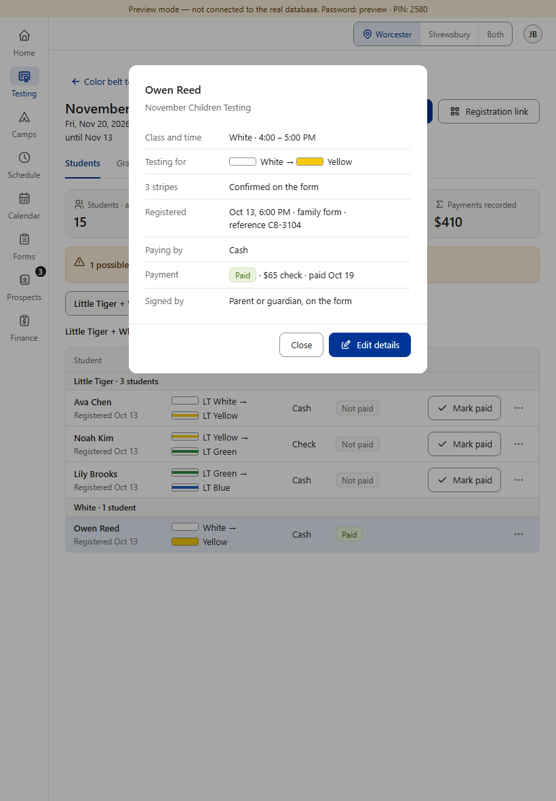
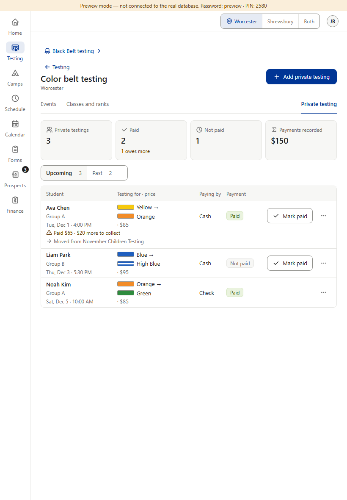
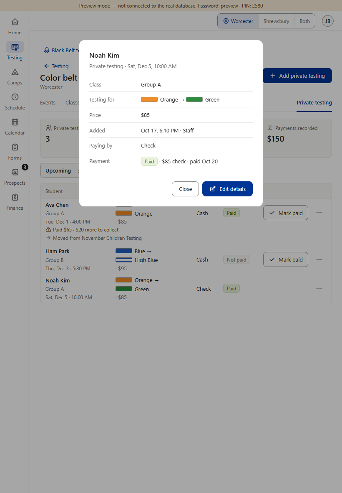

One pattern already, plus one missing piece. Rules §1.3 and §8: tap anywhere on a row to open the person's summary, so whatever a tablet or phone leaves out of the row can still be seen. Color Belt's event roster, Star, Black Belt and Camps all open the same kind of read-only summary, with Close · Edit details. Color Belt private testing rows don't open at all — missing, not planned. (9b, the change history inside the summary, comes next.) (Preview screenshots at tablet size, 820 wide, touch · fake data)
Today · Color Belt, same tablet

1. Event roster: tap Owen Reed's row → his summary. The tablet leaves out the “Paid on” column, but the summary shows “paid Oct 19”.

2. Private testing: no “Paid on” column on the tablet either, and tapping a row opens nothing — there's no way to see when Noah Kim paid.
Star, Black Belt and Camps already open the same kind of summary. Their small differences were approved: Black Belt keeps Edit details in the summary's ⋯, next to Record payment; Camps opens from the camper's name (its row is full of check-in buttons). Star's ⋯ calls it “Edit candidate” (menu words are item 10).
Proposed (option B) · tap a private testing row

3. The same summary as the event roster, with the private testing's own details: class, testing for, price, when it was added, paying by, and the payment with its date. Close · Edit details. Mark paid and the ⋯ stay on the row, as today.
Copies what's already there: the event roster's own summary — same frame, same kind of rows — filled with what a private testing already stores. Picture 3 is drawn over the real tablet page; nothing in the app was changed. Owner: Color Belt.
Your choice — one question: A · Keep as today.+ no work. − on a tablet or phone there's no way to see when a private testing was paid; it breaks rules §1.3 and §8. B · Recommended: the same summary as the event roster (picture 3). Tap anywhere on a private testing row → its summary, with Close · Edit details; Mark paid and the ⋯ stay on the row. + one way to open a person in every roster, nothing new to learn; what the tablet leaves out can be seen again. − a small build for Color Belt. C · Only add the paid date to the row on small screens (e.g. “Paid Oct 20” under the tag). + the smallest change. − rows still don't open, unlike every other roster; anything else a phone leaves out stays hidden.